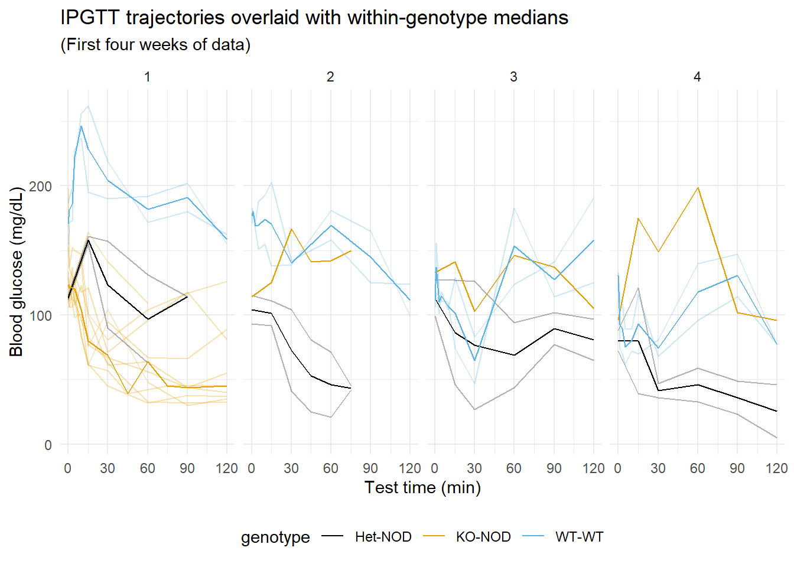

1 + 1[1] 2This is a Quarto website.
To learn more about Quarto websites visit https://quarto.org/docs/websites.
Data Dictionary
| Name | Data Type | Description | Unit of Measurement |
|---|---|---|---|
| mouse_id | chr | Unique identifier for each mouse | NA |
| mouse | chr | Identifier or name assigned to each mouse | NA |
| genotype | factor | Genetic constitution of each mouse (e.g., WT, Het, KO) | NA |
| sex | factor | Sex of the mouse (e.g., Male, Female) | NA |
| test_week | num | Week number when the test was conducted | weeks |
| time_point | num | Specific time point at which data was collected | min |
| body_weight | num | Body weight of the mouse | g |
| glucose reading | num | Blood glucose level of the mouse | mg/dL |
Attaching package: 'dplyr'The following objects are masked from 'package:stats':
filter, lagThe following objects are masked from 'package:base':
intersect, setdiff, setequal, unionIPGTT_tidy_data_corrected <- read_excel("C:/Users/dhana/Desktop/ISB/DataFrames/T1D/data/IPGTT_tidy_data_corrected.xlsx")
summary(IPGTT_tidy_data_corrected) Mouse BW Test Week Genotype
Length:2424 Min. :16.60 Min. : 1.000 Length:2424
Class :character 1st Qu.:20.07 1st Qu.: 3.000 Class :character
Mode :character Median :22.55 Median : 6.000 Mode :character
Mean :22.24 Mean : 6.378
3rd Qu.:24.50 3rd Qu.: 9.000
Max. :26.20 Max. :12.000
NA's :1800 NA's :456
Sex Time Point Glucose Reading
Length:2424 Length:2424 Min. : 5.0
Class :character Class :character 1st Qu.: 68.0
Mode :character Mode :character Median :118.0
Mean :168.5
3rd Qu.:172.0
Max. :750.0
NA's :1959 tibble [624 × 7] (S3: tbl_df/tbl/data.frame)
$ mouse : chr [1:624] "LP" "LP" "LP" "LP" ...
$ body_weight : num [1:624] 21.5 23.8 24.6 22.8 25.4 24.8 25.3 25.5 25 25.8 ...
$ test_week : num [1:624] 1 2 3 4 5 6 7 8 9 10 ...
$ genotype : chr [1:624] "KO-NOD" "KO-NOD" "KO-NOD" "KO-NOD" ...
$ sex : chr [1:624] "F" "F" "F" "F" ...
$ time_point : chr [1:624] "0 min" "0 min" "0 min" "0 min" ...
$ glucose_reading: num [1:624] 114 114 133 96 158 155 155 161 137 252 ...# IPGTT_data$sex <- factor(IPGTT_data$sex, levels = c("Female", "Male"))
# IPGTT_data$genotype <- factor(IPGTT_data$genotype, levels = c("WT-WT", "Het-NOD", "KO-NOD"))
IPGTT_data$sex <- factor(IPGTT_data$sex)
IPGTT_data$genotype <- factor(IPGTT_data$genotype)
# Checking to see if data type changed
str(IPGTT_data)tibble [624 × 8] (S3: tbl_df/tbl/data.frame)
$ mouse : chr [1:624] "LP" "LP" "LP" "LP" ...
$ body_weight : num [1:624] 21.5 23.8 24.6 22.8 25.4 24.8 25.3 25.5 25 25.8 ...
$ test_week : num [1:624] 1 2 3 4 5 6 7 8 9 10 ...
$ genotype : Factor w/ 3 levels "Het-NOD","KO-NOD",..: 2 2 2 2 2 2 2 2 2 2 ...
$ sex : Factor w/ 1 level "F": 1 1 1 1 1 1 1 1 1 1 ...
$ time_point : num [1:624] 0 0 0 0 0 0 0 0 0 0 ...
$ glucose_reading: num [1:624] 114 114 133 96 158 155 155 161 137 252 ...
$ mouse_id : chr [1:624] "LP-KO-NOD" "LP-KO-NOD" "LP-KO-NOD" "LP-KO-NOD" ...IPGTT_data <- IPGTT_data %>% relocate(mouse_id, .before = mouse)
IPGTT_data <- IPGTT_data %>% relocate(body_weight, .before = glucose_reading)
IPGTT_data <- IPGTT_data %>% relocate(genotype, .before = test_week)
IPGTT_data <- IPGTT_data %>% relocate(sex, .before = test_week)
IPGTT_data <- IPGTT_data %>% relocate(body_weight, .before = glucose_reading)
IPGTT_data <- IPGTT_data %>% relocate(time_point, .before = body_weight)#IPGTT trajectories overlaid with within-genotype medians
library(dplyr)
library(ggplot2)
okabe_ito_palette <- rep(grDevices::palette.colors(palette = "Okabe-Ito"))
IPGTT_fil <- IPGTT_data %>% filter(!is.na(glucose_reading), test_week %in% 1:4)
median_data <- IPGTT_data %>% filter(!is.na(glucose_reading), test_week %in% 1:4) %>%
group_by(time_point, genotype, test_week) %>%
summarise(median_glucose_reading = median(glucose_reading, na.rm = TRUE))`summarise()` has grouped output by 'time_point', 'genotype'. You can override
using the `.groups` argument.ggplot(IPGTT_fil, aes(time_point, glucose_reading, color = genotype, group = mouse_id)) +
geom_line(alpha = 0.3) +
geom_line(data = median_data, aes(x = time_point, y = median_glucose_reading, color = genotype, group = genotype)) +
facet_wrap(~ test_week, ncol = 4) +
theme_minimal() +
scale_x_continuous(breaks=seq(0,120, by=30)) +
scale_color_manual(values = okabe_ito_palette) +
labs(title = "IPGTT trajectories overlaid with within-genotype medians", x="Test time (min)", y = "Blood glucose (mg/dL)", subtitle = "(First four weeks of data)") +
theme(legend.position = "bottom")